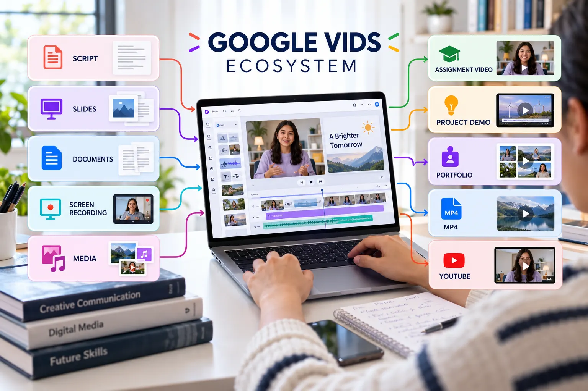

Google Vids Overview
Plan, record, edit and share a concise technical video that communicates authentic project evidence.

What Google Vids supports
Create
Begin with a blank video, template, presentation, document or an AI-assisted draft.
Record
Capture a screen, voice, camera or presentation directly for a focused explanation.
Edit
Arrange scenes, trim recordings, control timing and refine speech through the transcript.
Collaborate
Invite viewers, commenters or editors and review the video within Google Workspace.
Publish
Share a Vids link, export to Drive, download MP4 or publish through YouTube where available.
Document
Add the verified video link and production evidence to the project README.
Choose the right starting point
Blank or template
Best when you already have a storyboard and want full control of the visual structure.
Slides or document
Best when your evidence is already organised and needs to become scenes with narration.
Screen recording
Best for demonstrating a repository, prototype, website, workflow or technical process.
AI-assisted creation
Best for generating an initial structure that will be checked and replaced with authentic evidence.
Account note: access to Gemini features, avatars, generated media and usage limits depends on the Google account and Workspace plan. The core assignment can still be completed with manual planning, recording and editing.
Learning outcomes
- Explain the role of Google Vids in the Topic 02 workflow.
- Select an appropriate production starting point.
- Plan a video around authentic project evidence.
- Prepare a tested output suitable for assessment and portfolio use.